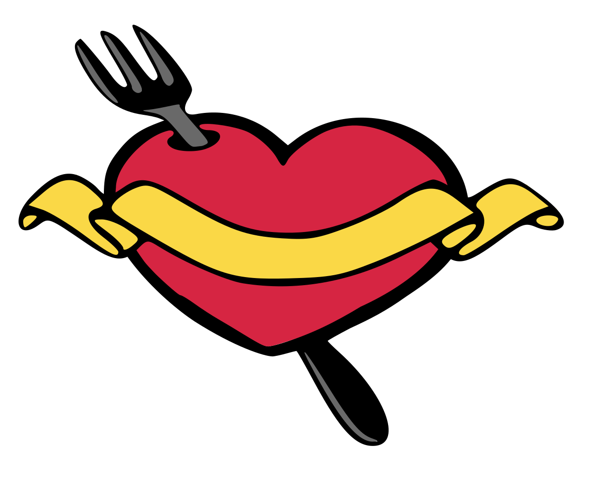
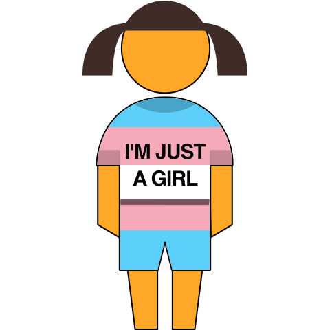
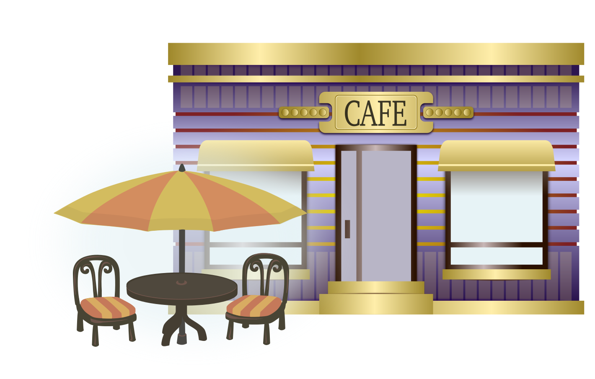

译林版英语四年级 · 口语开口训练舱
四年级孩子从会答一句到能说一段
译林版四年级关键练习豆包陪练
这是什么？
专为译林版四年级孩子设计的英语开口训练舱，起点 S2-S3。8 个校园与生活单元，每单元 8 句核心句、1 段真实对话、1 个看图说话任务、1 个原创小故事，全部配豆包陪练指令。孩子从"能答一句"练到"能说一段"，每天 15 分钟，能把课本话题变成自己的表达。
适合谁
怎么用（3 步）
- 打开本页，选一个单元
- 先看中文说出英文，再听句子跟读 3 遍
- 复制该单元豆包指令，让豆包当陪练，孩子开口回答，每天 15 分钟
单元 1 · 课程与科目
School Subjects
目标：会说出各科名称，能介绍自己的课程表并说出喜欢的科目和理由
🎬 示例视频
🎧 示例对话音频
🔑 核心句（关键练习）
- What subjects do you have today? We have Chinese and English.你们今天有什么课？我们有语文和英语。
- My favourite subject is Science. It is very interesting.我最喜欢的科目是科学。它很有意思。
- We have a Music lesson on Monday afternoon.我们星期一下午有一节音乐课。
- I am good at Maths, but I do not like Art.我数学很好，但我不喜欢美术。
- Do you like PE? Yes, I do. I can run fast.你喜欢体育吗？喜欢。我跑得很快。
- English is fun because we play games in class.英语很有趣，因为我们在课上玩游戏。
- How many lessons do you have today? We have six.你们今天有几节课？六节。
- I want to be better at Chinese this term.这学期我想把语文学得更好。
📚 本单元词汇
subject 科目
Chinese 语文
Maths 数学
English 英语
Music 音乐
PE 体育
Art 美术
Science 科学
timetable 课程表
lesson 课
词汇例句
- My favourite subject at school is Science.
- We have a Chinese lesson every morning.
- I am quite good at Maths.
- English is fun because we play games.
- We sing songs in Music class.
- We play football in PE class.
- I draw pictures in Art class.
- Science is my favourite subject at school.
- Look at our new timetable on the wall.
- We have six lessons every day.
💬 情景对话
Yang Ling
Wang Bing, look at our new timetable.王兵，看看我们的新课表。
Wang Bing
We have Chinese, Maths, English and PE today.我们今天有语文、数学、英语和体育。
Yang Ling
So, what is your favourite subject?那你最喜欢哪一门课？
Wang Bing
I like Science best. It is very interesting.我最喜欢科学。它很有意思。
Yang Ling
That is nice. Are you good at Maths?挺好的。你数学好吗？
Wang Bing
Yes, I am. What about you?还不错。你呢？
Yang Ling
I am good at Music. I can play the piano.我音乐不错。我会弹钢琴。
Yang Ling
Sure. You can sing with me after the English lesson.当然。英语课后你可以和我一起唱。
🖼️ 看图说话任务（P1–P5 分层）

图片描述：一间教室：黑板上贴着一张课程表，上面写着语文、数学、英语、体育、音乐和美术；一个女孩正指着课程表说话，旁边一个男孩在翻英语书，墙上还挂着一幅画和一张世界地图。
| 可见事实 | 合理推断 |
|---|---|
| 黑板上贴着一张课程表 | Maybe they are talking about their timetable, because the girl is pointing at it. |
| 课程表上写着六门课的名字 | I think the boy likes English, because he is reading an English book. |
| 一个女孩正在指着课程表 | |
| 旁边有一个男孩在翻英语书 | |
| 墙上挂着一幅画和一张世界地图 |
个人联想：What is your favourite subject? Why?
无法确认：我们看不出今天是星期几，也听不到他们在说什么
本单元语言点：We have... / My favourite subject is...
观察路线：
| 层级 | 任务要求 |
|---|---|
| P1 | 说出图里的科目和物品：Chinese、Maths、English、PE、timetable |
| P2 | 用句框说 3-4 句：We have ___ today. / I can see a ___. |
| P3 | 只看关键词 timetable / girl / boy / English book，说 5-6 句 |
| P4 | 按"黑板—墙上—两个孩子"的顺序说 6-8 句，加一个 Maybe |
| P5 | 说完回答：What is your favourite subject? 并说出一个理由 |
句框：We have ___ on Monday.
My favourite subject is ___.
The girl is pointing at ___.
I think the boy likes ___ because ___.
My favourite subject is ___.
The girl is pointing at ___.
I think the boy likes ___ because ___.
提问阶梯：What can you see on the blackboard?
What subjects are on the timetable?
What is the boy doing?
Why is the girl pointing at the timetable?
What is your favourite subject? Why?
What subjects are on the timetable?
What is the boy doing?
Why is the girl pointing at the timetable?
What is your favourite subject? Why?
| 维度 | 达标 | 需要支持 |
|---|---|---|
| 事实准确 | 说的都是图里能看到的东西 | 凭空加没出现的内容 |
| 顺序清楚 | 按"黑板—墙上—人"依次说 | 想到哪儿说到哪儿 |
| 句子完整 | 用 We have / My favourite subject is 完整句 | 只说科目单词 |
| 推断有证据 | 用 Maybe / I think... because | 把猜测说成事实 |
📖 故事复述与表达（L1–L5 支架）
A New Timetable
Miss Li puts up a new timetable.
The children look at it happily.
Wang Bing says, "We have PE on Friday!"
Yang Ling says, "I like Music on Monday."
Wang Bing wants to try Music too.
Yang Ling says, "Come and sing with me."
Now they go to Music together.
Miss Li puts up a new timetable.
The children look at it happily.
Wang Bing says, "We have PE on Friday!"
Yang Ling says, "I like Music on Monday."
Wang Bing wants to try Music too.
Yang Ling says, "Come and sing with me."
Now they go to Music together.
中文大意：李老师贴了一张新课表，孩子们高兴地围着看。王兵说"我们周五有体育课！"杨玲说"我喜欢周一的音乐课"。王兵也想试试音乐，杨玲就邀请他一起去唱歌。
| 故事地图 | 内容 |
|---|---|
| 人物与情境 | 王兵和杨玲 |
| 想要什么 | 想找到自己喜欢的课 |
| 遇到问题 | 王兵只关注体育，不知道音乐也很好玩 |
| 如何解决 | 杨玲邀请他一起去上音乐课 |
| 结果与变化 | 两个人现在一起去上音乐课 |
事件顺序：Miss Li puts up a new timetable. → Wang Bing is happy about PE. → Yang Ling talks about Music. → She invites him to sing. → They go to Music together.
排序练习（顺序已打乱）：They go to Music together.
Miss Li puts up a new timetable.
She invites him to sing.
Wang Bing is happy about PE.
Miss Li puts up a new timetable.
She invites him to sing.
Wang Bing is happy about PE.
关键词：timetable / PE / Music / Friday / sing / together
| 支架 | 做法 |
|---|---|
| L1 | 看图跟读关键句：We have PE on Friday. |
| L2 | 用句框补科目：We have ___ on ___. / My favourite subject is ___. |
| L3 | 只看关键词 timetable / PE / Music / sing / together，按顺序说完整句 |
| L4 | 看着故事地图讲一遍（人物—想做什么—问题—结果） |
| L5 | 只看标题独立复述，并说出自己这学期想学好哪一门 |
连接词句框：First, Miss Li puts up ___.
Then, Wang Bing says, "___!"
After that, Yang Ling invites him to ___.
Finally, they ___.
Then, Wang Bing says, "___!"
After that, Yang Ling invites him to ___.
Finally, they ___.
迁移表达：
换视角：换成杨玲的视角讲：I like Music. I ask Wang Bing to come.
说感受：王兵为什么愿意去音乐课？从故事里找证据
新结局：如果课表上没有音乐课，故事会怎么变？
换视角：换成杨玲的视角讲：I like Music. I ask Wang Bing to come.
说感受：王兵为什么愿意去音乐课？从故事里找证据
新结局：如果课表上没有音乐课，故事会怎么变？
🤖 豆包陪练指令（本单元）
请你扮演一位英语老师，和我四年级的孩子练习"说课程与科目"。规则：1）先问 What subjects do you have today?；2）孩子答完再问 What is your favourite subject? Why?，逼他说出理由；3）他说不出理由就给句框 I like it because it is ___；4）句子出现语法错误时，不要说"错了"，而是把正确的句子完整说一遍让他跟读；5）再反问 Do you like ...?，让他用 Yes, I do. / No, I do not. 回答；6）最后让他介绍自己的课程表，说 3 句话；7）全程鼓励，语速中等，不打断。
单元 2 · 时间
Telling the Time
目标：会问时间、说出整点和半点，能说清自己几点做什么
🎬 示例视频
🎧 示例对话音频
🔑 核心句（关键练习）
- What time is it? It is seven o'clock.几点了？七点。
- It is half past six. Time to get up.六点半了。该起床了。
- I get up at seven every morning.我每天早上七点起床。
- School starts at eight, so do not be late.学校八点上课，别迟到。
- We have lunch at twelve o'clock.我们十二点吃午饭。
- I go home at four thirty in the afternoon.我下午四点半回家。
- What time do you go to bed? At nine.你几点睡觉？九点。
- It is time for bed. Good night, Mum.该睡觉了。晚安，妈妈。
📚 本单元词汇
time 时间
o'clock ……点钟
half 一半
morning 早上
afternoon 下午
evening 晚上
night 夜里
clock 钟
late 迟到的
hurry 赶快
词汇例句
- What time is it now, please?
- It is seven o'clock in the morning.
- It is half past six now.
- I get up at seven in the morning.
- We go home at four in the afternoon.
- I read books in the evening.
- I go to bed at nine at night.
- The clock on the wall is slow.
- Hurry up, or we will be late.
- Hurry up! It is time for school.
💬 情景对话
Mum
Wang Bing, hurry up! What time is it?王兵，快点！几点了？
Wang Bing
It is half past six. I am still tired.六点半了。我还困着呢。
Mum
School starts at eight. Get up, please.学校八点上课。请起床吧。
Wang Bing
OK. What time do we have breakfast?好吧。我们几点吃早饭？
Mum
At seven. We have eggs and milk today.七点。今天吃鸡蛋和牛奶。
Wang Bing
Nice. What time do you go to work?太好了。你几点去上班？
Mum
I go to work at eight thirty. Do not worry.我八点半上班。别担心。
Wang Bing
I will be ready. See you this afternoon!我会准备好的。下午见！
🖼️ 看图说话任务（P1–P5 分层）
图片描述：一间卧室：墙上挂着一个钟，指针指向六点半；床边一个男孩还在被子里，妈妈站在门口指着钟；床头的桌子上放着一杯牛奶和一个书包；窗外天刚刚亮。
| 可见事实 | 合理推断 |
|---|---|
| 墙上挂着一个钟 | Maybe the boy is still sleepy, because he is in bed. |
| 指针指向六点半 | I think it is time to get up, because Mum is pointing at the clock. |
| 男孩还躺在床上 | |
| 妈妈站在门口指着钟 | |
| 床头桌上有一杯牛奶和一个书包 |
个人联想：What time do you get up every day?
无法确认：我们不知道今天是星期几，也不知道男孩几点睡的
本单元语言点：It is... o'clock / I ... at ...
观察路线：
| 层级 | 任务要求 |
|---|---|
| P1 | 说出时间和物品：six thirty、clock、milk、school bag |
| P2 | 用句框说 3-4 句：It is ___ o'clock. / I get up at ___. |
| P3 | 只看关键词 clock / half past six / Mum / bed，说 5-6 句 |
| P4 | 按"墙上—床上—桌边—门口"的顺序说 6-8 句，加一个 Maybe |
| P5 | 说完回答：What time do you go to bed? 并说说自己的作息 |
句框：It is ___ o'clock.
I get up at ___.
It is time for ___.
Maybe the boy is ___.
I get up at ___.
It is time for ___.
Maybe the boy is ___.
提问阶梯：What time is it in the picture?
Where is the clock?
What is Mum doing?
Is the boy ready for school? Why?
What time do you go to bed?
Where is the clock?
What is Mum doing?
Is the boy ready for school? Why?
What time do you go to bed?
| 维度 | 达标 | 需要支持 |
|---|---|---|
| 事实准确 | 时间和位置都说对了 | 时间说错、凭空加东西 |
| 顺序清楚 | 按空间顺序说 | 想到哪儿说到哪儿 |
| 句子完整 | 用 It is... / I ... at ... 完整句 | 只报数字 |
| 推断有证据 | 用 Maybe / because 说明依据 | 直接下结论，不给理由 |
📖 故事复述与表达（L1–L5 支架）
The Slow Clock
Wang Bing looks at the clock.
It says half past six.
He gets up and washes his face.
He eats bread and drinks milk.
Then he sees the kitchen clock.
It says seven o'clock!
His bedroom clock is slow.
He runs to school and laughs.
Wang Bing looks at the clock.
It says half past six.
He gets up and washes his face.
He eats bread and drinks milk.
Then he sees the kitchen clock.
It says seven o'clock!
His bedroom clock is slow.
He runs to school and laughs.
中文大意：王兵看了看钟，六点半。他起床洗脸，吃了面包、喝了牛奶，然后看到厨房的钟已经是七点了——原来卧室的钟慢了。他一路跑着去学校，还笑了起来。
| 故事地图 | 内容 |
|---|---|
| 人物与情境 | 王兵 |
| 想要什么 | 想按时到学校 |
| 遇到问题 | 卧室的钟慢了，他以为还早 |
| 如何解决 | 看到厨房的钟才发现晚了，赶紧出发 |
| 结果与变化 | 他跑着去学校，还笑自己太粗心 |
事件顺序：Wang Bing looks at his bedroom clock. → He gets up and washes his face. → He eats bread and drinks milk. → He sees the kitchen clock. → He runs to school.
排序练习（顺序已打乱）：He runs to school.
He gets up and washes his face.
Wang Bing looks at his bedroom clock.
He sees the kitchen clock.
He gets up and washes his face.
Wang Bing looks at his bedroom clock.
He sees the kitchen clock.
关键词：clock / half past six / seven / slow / kitchen / school
| 支架 | 做法 |
|---|---|
| L1 | 看图跟读关键句：It is half past six. |
| L2 | 用句框补时间：It is ___ o'clock. / I go to bed at ___. |
| L3 | 只看关键词 clock / slow / seven / kitchen / school，按顺序说完整句 |
| L4 | 看着故事地图讲一遍（人物—想做什么—问题—结果） |
| L5 | 只看标题独立复述，并说出自己房间里的钟准不准 |
连接词句框：First, Wang Bing looks at ___.
Then, he gets up and ___.
After that, he sees ___.
Finally, he runs ___.
Then, he gets up and ___.
After that, he sees ___.
Finally, he runs ___.
迁移表达：
换视角：换成妈妈的视角讲：My boy looks at the clock and gets up.
说感受：王兵为什么还能笑出来？从故事里找证据
新结局：如果他真的迟到了，他会怎么跟老师说？
换视角：换成妈妈的视角讲：My boy looks at the clock and gets up.
说感受：王兵为什么还能笑出来？从故事里找证据
新结局：如果他真的迟到了，他会怎么跟老师说？
🤖 豆包陪练指令（本单元）
请你扮演每天叫孩子起床的家长，和我四年级的孩子练习"说时间"。规则：1）先问 What time is it?，让他看着家里的钟回答；2）再问 What time do you get up / go to school / go to bed?，三个问题依次来；3）孩子答错时间你不直接否定，而是说"我看看，是不是七点半？"让他自己改；4）重点练 It is ... o'clock. / It is half past ... / I ... at ...；5）最后让他用 3 句话说说自己的一天；6）语速中等，多用中文辅助，不纠错音。
单元 3 · 运动
Sports
目标：会说出常见运动，能说自己会什么、多久练一次，并邀请同学一起运动
🎬 示例视频
🎧 示例对话音频
🔑 核心句（关键练习）
- I can play football, but I can not swim.我会踢足球，但我不会游泳。
- We play basketball on the playground after school.我们放学后在操场上打篮球。
- I go swimming every Sunday morning with my dad.我每周日早上和爸爸去游泳。
- Can you jump high? Yes, I can.你能跳得高吗？能。
- Sports make me strong and happy.运动让我又强壮又开心。
- Our class team plays football every Saturday afternoon.我们班队每周六下午踢足球。
- Let us have a race. Are you ready?我们比个赛吧。准备好了吗？
- I run for twenty minutes every morning.我每天早上跑步二十分钟。
📚 本单元词汇
sport 运动
football 足球
basketball 篮球
swim 游泳
run 跑步
jump 跳
playground 操场
team 队
race 赛跑
strong 强壮的
词汇例句
- I like sports because they are fun.
- I play football with my friends after school.
- He can play basketball very well.
- I swim with my dad every Sunday morning.
- I run in the park every morning.
- She can jump very high in PE class.
- We play football on the playground.
- Our team plays football on Sundays.
- We have a race on Sports Day.
- Sports make me strong and happy.
💬 情景对话
Wang Bing
Yang Ling, do you like sports?杨玲，你喜欢运动吗？
Yang Ling
Yes, I do. I swim every Sunday.喜欢。我每个周日去游泳。
Wang Bing
You swim every Sunday. Can you swim fast?你每周日都游泳。你游得快吗？
Yang Ling
Yes, I can. What sport do you like?游得挺快。你喜欢什么运动？
Wang Bing
I like football. Our team plays on Saturdays.我喜欢足球。我们队周六踢球。
Yang Ling
That sounds fun. Can I come and watch?听起来很好玩。我能去看吗？
Wang Bing
Sure. Do you want to play with us?当然。你想和我们一起踢吗？
Yang Ling
I would love to, but I can not play football.我很想，但我不会踢足球。
🖼️ 看图说话任务（P1–P5 分层）
图片描述：学校操场：三个孩子在踢足球，两个孩子在打篮球，跑道上一个女孩正在跑步，旁边的沙坑里有一个男孩准备跳远，天空很蓝，操场边种着几棵树。
| 可见事实 | 合理推断 |
|---|---|
| 三个孩子在踢足球 | Maybe it is a PE lesson, because many children are doing sports. |
| 两个孩子在打篮球 | I think the boy in the sandpit is going to jump. |
| 跑道上有一个女孩在跑步 | |
| 沙坑里有一个男孩 | |
| 操场边有几棵树 |
个人联想：What sport do you like? How often do you do it?
无法确认：我们看不出比分，也不知道他们是不是在比赛
本单元语言点：I can... / I play... every...
观察路线：
| 层级 | 任务要求 |
|---|---|
| P1 | 说出运动名：football、basketball、swimming、running、jumping |
| P2 | 用句框说 3-4 句：I can ___. / I play ___ every ___. |
| P3 | 只看关键词 football / basketball / run / jump / playground，说 5-6 句 |
| P4 | 按"草地—跑道—沙坑—边上"的顺序说 6-8 句，加一个 Maybe |
| P5 | 说完回答：What sport do you like? 并说出多久练一次 |
句框：I can ___ very well.
I play ___ every ___.
There are ___ children on the playground.
Maybe they are having a ___ lesson.
I play ___ every ___.
There are ___ children on the playground.
Maybe they are having a ___ lesson.
提问阶梯：What sports can you see?
What is the girl doing on the track?
Where is the boy in the sandpit?
Do they look happy? Why do you think so?
What sport do you do after school?
What is the girl doing on the track?
Where is the boy in the sandpit?
Do they look happy? Why do you think so?
What sport do you do after school?
| 维度 | 达标 | 需要支持 |
|---|---|---|
| 事实准确 | 说的都是图里在做的运动 | 凭空加运动、说错位置 |
| 顺序清楚 | 按场地顺序说 | 想到哪儿说到哪儿 |
| 句子完整 | 用 I can / I play... every... 完整句 | 只说运动单词 |
| 推断有证据 | 用 Maybe / I think... because | 直接下结论，不给理由 |
📖 故事复述与表达（L1–L5 支架）
The Slow Runner
Wang Bing is not a fast runner.
His friends run past him every time.
He runs in the park every morning.
He runs for twenty minutes each day.
After one month, he runs faster.
On Sports Day, he joins the race.
He does not win, but he finishes happily.
His friends cheer for him.
Wang Bing is not a fast runner.
His friends run past him every time.
He runs in the park every morning.
He runs for twenty minutes each day.
After one month, he runs faster.
On Sports Day, he joins the race.
He does not win, but he finishes happily.
His friends cheer for him.
中文大意：王兵跑得不快，每次都被朋友超过。他每天早上在公园跑二十分钟，坚持了一个月，真的跑快了。运动会上他参加了赛跑，虽然没有拿到第一，但他跑完了全程，朋友们都为他欢呼。
| 故事地图 | 内容 |
|---|---|
| 人物与情境 | 跑得慢的王兵 |
| 想要什么 | 想跑得快一点 |
| 遇到问题 | 每次都被朋友超过，有点泄气 |
| 如何解决 | 每天早起在公园练跑二十分钟 |
| 结果与变化 | 运动会跑完全程，朋友为他欢呼 |
事件顺序：Wang Bing is a slow runner. → He runs in the park every morning. → He practises for one month. → He joins the race on Sports Day. → His friends cheer for him.
排序练习（顺序已打乱）：He joins the race on Sports Day.
Wang Bing is a slow runner.
He runs in the park every morning.
His friends cheer for him.
Wang Bing is a slow runner.
He runs in the park every morning.
His friends cheer for him.
关键词：runner / slow / park / twenty minutes / race / cheer
| 支架 | 做法 |
|---|---|
| L1 | 看图跟读关键句：He runs for twenty minutes every morning. |
| L2 | 用句框补运动和时间：I play ___ every ___. / I can ___ very well. |
| L3 | 只看关键词 slow / park / every morning / race / cheer，按顺序说完整句 |
| L4 | 看着故事地图讲一遍（人物—想做什么—困难—怎么练—结果） |
| L5 | 只看标题独立复述，并说说自己练过的一项运动 |
连接词句框：First, Wang Bing is a ___ runner.
Then, he runs ___ every morning.
After that, he joins ___.
Finally, his friends ___.
Then, he runs ___ every morning.
After that, he joins ___.
Finally, his friends ___.
迁移表达：
换视角：换成王兵朋友的视角讲：Wang Bing runs with us every morning.
说感受：王兵没拿第一，为什么还开心？从故事里找证据
新结局：如果他第一个月就放弃了，故事会怎么变？
换视角：换成王兵朋友的视角讲：Wang Bing runs with us every morning.
说感受：王兵没拿第一，为什么还开心？从故事里找证据
新结局：如果他第一个月就放弃了，故事会怎么变？
🤖 豆包陪练指令（本单元）
请你扮演体育老师，和我四年级的孩子练习"说运动"。规则：1）先问 What sport do you like?；2）孩子答完追问 How often do you do it?，引导他说 every Sunday / twice a week；3）再问 Can you ...?，让他用 Yes, I can. / No, I can not. 回答，并补一句理由；4）他说不出频率就给选项："每周日还是每天？"；5）重点练 I can... / I play... every... / Sports make me...；6）最后让他邀请你去运动：Let us play ___ together.；7）全程轻松，多鼓励，不纠错音。
单元 4 · 衣物
Clothes
目标：会说出常见衣物，能描述穿着、问衣物是谁的、在店里挑选尺码
🎬 示例视频
🎧 示例对话音频
🔑 核心句（关键练习）
- I am wearing a blue shirt and black trousers today.我今天穿着蓝衬衫和黑裤子。
- Whose coat is this? It is mine.这是谁的外套？是我的。
- These trousers are too long. Can I try a smaller one?这条裤子太长了。我能试小一号的吗？
- She is wearing a pink dress and white shoes.她穿着一条粉色裙子和白鞋。
- Put on your cap. The sun is very strong.戴上帽子。太阳很晒。
- My shoes are dirty. I need to wash them.我的鞋脏了。我得洗一洗。
- I wear my warm coat when it is cold.天冷的时候我穿厚外套。
- Can I try this shirt on? Size ten, please.我能试穿这件衬衫吗？请给我十号的。
📚 本单元词汇
clothes 衣服
shirt 衬衫
dress 连衣裙
trousers 裤子
shoes 鞋
cap 帽子
coat 外套
socks 袜子
size 尺码
wear 穿
词汇例句
- I like these clothes very much.
- He is wearing a blue shirt.
- She is wearing a pink dress.
- These trousers are too long for me.
- My new shoes are white and blue.
- Put on your cap. It is sunny.
- Whose blue coat is this, Wang Bing?
- My socks are under the bed.
- Can I try a bigger size?
- I wear my red coat in winter.
💬 情景对话
Mum
Wang Bing, whose coat is on the chair?王兵，椅子上是谁的外套？
Wang Bing
It is mine. I wore it yesterday.是我的。我昨天穿的。
Mum
Put it in the box, please. What are you wearing today?请把它放进箱子里。你今天穿什么？
Wang Bing
A blue shirt and my new white shoes.蓝衬衫和我的新白鞋。
Mum
Are the shoes OK? Do they fit?鞋子合脚吗？穿着合适吗？
Wang Bing
They are a little big. Can I change them?有点大。我能换一双吗？
Mum
Sure. We can go to the shop on Sunday.当然。我们周日去店里换。
Wang Bing
Thanks, Mum. Can I look at the caps too?谢谢妈妈。我也能看看帽子吗？
🖼️ 看图说话任务（P1–P5 分层）

图片描述：一家服装店：货架上挂着蓝色衬衫、粉色裙子和几件外套，架子上摆着白色和蓝色的运动鞋；一个男孩站在镜子前试一件外套，妈妈坐在旁边的椅子上看着；收银台上放着一顶帽子和一双袜子。
| 可见事实 | 合理推断 |
|---|---|
| 货架上挂着衬衫、裙子和外套 | Maybe they are buying clothes, because the boy is trying on a coat. |
| 架子上摆着白色和蓝色的运动鞋 | I think the woman is his mother, because she is waiting for him. |
| 一个男孩站在镜子前试外套 | |
| 一位女士坐在椅子上看着 | |
| 收银台上有一顶帽子和一双袜子 |
个人联想：What are you wearing today?
无法确认：我们看不出价格，也不知道这件外套合不合身
本单元语言点：I am wearing... / Whose ___ is this?
观察路线：
| 层级 | 任务要求 |
|---|---|
| P1 | 说出衣物名：shirt、dress、coat、shoes、cap、socks |
| P2 | 用句框说 3-4 句：I am wearing ___. / There is a ___ on the shelf. |
| P3 | 只看关键词 shirt / shoes / mirror / coat / cap，说 5-6 句 |
| P4 | 按"货架—镜子前—椅子上—收银台"的顺序说 6-8 句，加一个 Maybe |
| P5 | 说完回答：What are you wearing today? 并说说自己最喜欢的一件衣服 |
句框：I am wearing ___.
There is a ___ on the shelf.
Whose ___ is this?
Maybe they are ___.
There is a ___ on the shelf.
Whose ___ is this?
Maybe they are ___.
提问阶梯：What clothes can you see in the shop?
What is the boy doing?
Where is the cap?
Are they buying clothes? Why do you think so?
What do you wear on cold days?
What is the boy doing?
Where is the cap?
Are they buying clothes? Why do you think so?
What do you wear on cold days?
| 维度 | 达标 | 需要支持 |
|---|---|---|
| 事实准确 | 说的都是图里有的衣物 | 凭空加衣物、说错位置 |
| 顺序清楚 | 按"货架—人—收银台"依次说 | 想到哪儿说到哪儿 |
| 句子完整 | 用 I am wearing / Whose ... is this 完整句 | 只说衣物单词 |
| 推断有证据 | 用 Maybe / I think... because | 把猜测说成事实 |
📖 故事复述与表达（L1–L5 支架）
The Blue Shirt
Wang Bing wants a new shirt.
He goes to a shop with his mother.
He tries on a blue shirt.
It is too big for him.
He tries a smaller one.
It fits very well.
His mother buys it for him.
He wears it to school on Monday.
Wang Bing wants a new shirt.
He goes to a shop with his mother.
He tries on a blue shirt.
It is too big for him.
He tries a smaller one.
It fits very well.
His mother buys it for him.
He wears it to school on Monday.
中文大意：王兵想要一件新衬衫，和妈妈去了商店。他先试了件蓝色的，太大了；又试了一件小号的，正合适。妈妈买给了他，他周一就穿着去上学了。
| 故事地图 | 内容 |
|---|---|
| 人物与情境 | 王兵和妈妈 |
| 想要什么 | 想买一件合身的新衬衫 |
| 遇到问题 | 第一件蓝色的太大了 |
| 如何解决 | 换了一件小号的，试穿后很合适 |
| 结果与变化 | 买到衬衫，周一穿着去上学 |
事件顺序：Wang Bing wants a new shirt. → He tries on a blue one. → It is too big. → He tries a smaller one. → His mother buys it.
排序练习（顺序已打乱）：His mother buys it.
He tries on a blue one.
Wang Bing wants a new shirt.
It is too big.
He tries on a blue one.
Wang Bing wants a new shirt.
It is too big.
关键词：shirt / shop / try on / too big / smaller / Monday
| 支架 | 做法 |
|---|---|
| L1 | 看图跟读关键句：He tries on a blue shirt. |
| L2 | 用句框补衣物：I am wearing ___. / These ___ are too ___. |
| L3 | 只看关键词 shirt / shop / too big / smaller / Monday，按顺序说完整句 |
| L4 | 看着故事地图讲一遍（人物—想做什么—问题—怎么解决—结果） |
| L5 | 只看标题独立复述，并说说自己买衣服的经历 |
连接词句框：First, Wang Bing wants ___.
Then, he tries on ___.
After that, he tries a ___ one.
Finally, his mother ___.
Then, he tries on ___.
After that, he tries a ___ one.
Finally, his mother ___.
迁移表达：
换视角：换成店员的视角讲：A boy wants a blue shirt. I help him.
说感受：王兵为什么又试了一件？从故事里找证据
新结局：如果小号的也太大，还可以怎么办？
换视角：换成店员的视角讲：A boy wants a blue shirt. I help him.
说感受：王兵为什么又试了一件？从故事里找证据
新结局：如果小号的也太大，还可以怎么办？
🤖 豆包陪练指令（本单元）
请你扮演服装店的店员，和我四年级的孩子练习"说衣物"。规则：1）先问 What are you looking for?；2）孩子说出一件衣服，你就问 What size do you want? / What colour do you like?；3）孩子说 Can I try it on? 你就回答 Sure, here you are.，并追问 Is it OK?；4）引导他说 It is too big. / It is too small. / It fits well.；5）重点练 I am wearing... / Whose ... is this? / It is too...；6）最后让孩子描述自己今天的穿着；7）全程用简单英文加中文提示，不纠错音。
单元 5 · 房间与家具
Rooms and Furniture
目标：会说出家里的房间和家具，能用 There is / There are 和方位词介绍自己的房间
🎬 示例视频
🎧 示例对话音频
🔑 核心句（关键练习）
- There is a big sofa in our living room.我们客厅里有一张大沙发。
- My bedroom is small, but it is very tidy.我的卧室很小，但是很整齐。
- The bookshelf is next to the window.书架在窗户旁边。
- I do my homework at the desk every evening.我每天晚上在书桌前写作业。
- There are two chairs and a table in the kitchen.厨房里有两把椅子和一张桌子。
- My lamp is on the desk, next to my books.我的台灯在书桌上，靠着我的书。
- Where is my cat? She is under the bed.我的猫在哪儿？她在床底下。
- I like my room because it is bright and quiet.我喜欢我的房间，因为它又亮又安静。
📚 本单元词汇
room 房间
bedroom 卧室
kitchen 厨房
bathroom 卫生间
sofa 沙发
desk 书桌
bookshelf 书架
lamp 台灯
bed 床
wardrobe 衣柜
词汇例句
- My room is small but tidy.
- I sleep in my bedroom every night.
- Mum is cooking in the kitchen.
- The bathroom is next to my bedroom.
- There is a big sofa in the living room.
- I do my homework at the desk.
- My bookshelf is next to the window.
- The lamp on my desk is new.
- My cat is sleeping under the bed.
- My clothes are in the wardrobe.
💬 情景对话
Yang Ling
Wang Bing, is your room big?王兵，你的房间大吗？
Wang Bing
No, it is small, but I like it.不大，很小，但我喜欢。
Yang Ling
It sounds nice. What is in your room?听起来不错。你房间里有什么？
Wang Bing
There is a bed, a desk and a bookshelf.有一张床、一张书桌和一个书架。
Yang Ling
Where is your bookshelf, next to the bed?你的书架在哪儿，在床边吗？
Wang Bing
It is next to the window. I read there.在窗户旁边。我在那儿看书。
Yang Ling
Do you do your homework in your room?你在房间里写作业吗？
Wang Bing
Yes. I sit at the desk and turn on the lamp.是的。我坐在书桌前，把台灯打开。
🖼️ 看图说话任务（P1–P5 分层）

图片描述：一间儿童卧室：靠窗的位置有一张书桌，桌上放着一盏台灯和几本书；书桌旁是一个三层书架，上面放满了书；房间左边有一张床，床底下露出一双拖鞋；墙角立着一个衣柜，墙上贴着一张地图。
| 可见事实 | 合理推断 |
|---|---|
| 靠窗有一张书桌 | Maybe the child likes reading, because the bookshelf is full of books. |
| 书桌上有一盏台灯和几本书 | I think this is a bedroom, because there is a bed in it. |
| 书桌旁有一个三层书架 | |
| 房间左边有一张床 | |
| 墙角有一个衣柜，墙上有一张地图 |
个人联想：What is in your bedroom?
无法确认：我们看不出房间有多大，也不知道住在这里的是男孩还是女孩
本单元语言点：There is / There are + 方位介词
观察路线：
| 层级 | 任务要求 |
|---|---|
| P1 | 说出家具名：desk、lamp、bookshelf、bed、wardrobe |
| P2 | 用句框说 3-4 句：There is a ___ in the room. / It is next to the ___. |
| P3 | 只看关键词 desk / lamp / bookshelf / bed / window，说 5-6 句 |
| P4 | 按"窗边—书架—床—墙角"的顺序说 6-8 句，用上 and 和一个 Maybe |
| P5 | 说完回答：What is in your bedroom? 并说出三样自己的家具 |
句框：There is a ___ in the room.
It is next to / under the ___.
I do my homework at the ___.
Maybe the child likes ___ because ___.
It is next to / under the ___.
I do my homework at the ___.
Maybe the child likes ___ because ___.
提问阶梯：What can you see in the bedroom?
Where is the lamp?
What is under the bed?
Why do you think the child likes reading?
What is in your bedroom?
Where is the lamp?
What is under the bed?
Why do you think the child likes reading?
What is in your bedroom?
| 维度 | 达标 | 需要支持 |
|---|---|---|
| 事实准确 | 家具和位置都说对了 | 说错位置、凭空加东西 |
| 顺序清楚 | 按"窗边—床—墙角"依次说 | 想到哪儿说到哪儿 |
| 句子完整 | 用 There is / There are 完整句 | 只说家具单词 |
| 推断有证据 | 用 Maybe / I think... because | 把猜测说成事实 |
📖 故事复述与表达（L1–L5 支架）
The Tidy Room
Wang Bing's room is in a mess.
His books are on the bed.
His shoes are under the desk.
His mother says, "Let us tidy it together."
They put the books on the bookshelf.
They put the shoes in the box.
Now the room looks big and bright.
Wang Bing wants to keep it tidy.
Wang Bing's room is in a mess.
His books are on the bed.
His shoes are under the desk.
His mother says, "Let us tidy it together."
They put the books on the bookshelf.
They put the shoes in the box.
Now the room looks big and bright.
Wang Bing wants to keep it tidy.
中文大意：王兵的房间乱糟糟的：书在床上，鞋在桌子底下。妈妈说"我们一起收拾吧"，他们把书放回书架，把鞋放进鞋盒。房间一下子变得又大又亮，王兵决定以后要保持整齐。
| 故事地图 | 内容 |
|---|---|
| 人物与情境 | 王兵和妈妈 |
| 想要什么 | 想让房间变整齐 |
| 遇到问题 | 东西乱放，房间显得又小又暗 |
| 如何解决 | 一起把书和鞋归位 |
| 结果与变化 | 房间又大又亮，他想一直保持下去 |
事件顺序：Wang Bing's room is in a mess. → His mother asks him to tidy it. → They put the books on the bookshelf. → They put the shoes in the box. → The room looks big and bright.
排序练习（顺序已打乱）：The room looks big and bright.
They put the books on the bookshelf.
Wang Bing's room is in a mess.
His mother asks him to tidy it.
They put the books on the bookshelf.
Wang Bing's room is in a mess.
His mother asks him to tidy it.
关键词：room / mess / books / shoes / bookshelf / tidy
| 支架 | 做法 |
|---|---|
| L1 | 看图跟读关键句：There is a desk next to the window. |
| L2 | 用句框补家具和位置：There is a ___ in the room. / It is ___ the ___. |
| L3 | 只看关键词 room / books / shoes / bookshelf / tidy，按顺序说完整句 |
| L4 | 看着故事地图讲一遍（人物—想做什么—问题—怎么解决—结果） |
| L5 | 只看标题独立复述，并说说自己房间的样子 |
连接词句框：First, Wang Bing's room is ___.
Then, his mother says, "___."
After that, they put ___.
Finally, the room looks ___.
Then, his mother says, "___."
After that, they put ___.
Finally, the room looks ___.
迁移表达：
换视角：换成妈妈的视角讲：My boy's room is in a mess today.
说感受：王兵为什么想保持整洁？从故事里找证据
新结局：如果他一个人收拾，故事会怎么变？
换视角：换成妈妈的视角讲：My boy's room is in a mess today.
说感受：王兵为什么想保持整洁？从故事里找证据
新结局：如果他一个人收拾，故事会怎么变？
🤖 豆包陪练指令（本单元）
请你扮演来家里做客的同学，和我四年级的孩子练习"介绍房间"。规则：1）先问 What is in your bedroom?；2）孩子每说出一样家具，你就追问 Where is it?，逼他用 next to / on / under 回答；3）他说错介词时，不要说"错了"，把完整句再说一遍让他跟读；4）重点练 There is / There are 和方位词；5）再问 Do you like your room? Why?，引导他说 because；6）最后让他用 4 句话介绍自己的房间；7）语速中等，多用中文提示，不纠错音。
单元 6 · 动物朋友
Animal Friends
目标：会介绍自己的宠物，能说清动物的样子、习性和自己怎么照顾它
🎬 示例视频
🎧 示例对话音频
🔑 核心句（关键练习）
- I have a pet cat. Her name is Mimi.我有一只宠物猫。她叫咪咪。
- My dog waits for me at the door every day.我的狗每天在门口等我。
- My parrot can say a few words in English.我的鹦鹉会说几个英文词。
- I feed my goldfish every morning before school.我每天上学前喂金鱼。
- My hamster sleeps in the daytime and runs at night.我的仓鼠白天睡觉，晚上跑来跑去。
- Do you have a pet? Yes, I have a rabbit.你有宠物吗？有，我有一只兔子。
- I take my dog for a walk every evening.我每天晚上带狗去散步。
- Animals are our friends, so we should be kind to them.动物是我们的朋友，所以我们要善待它们。
📚 本单元词汇
pet 宠物
parrot 鹦鹉
goldfish 金鱼
hamster 仓鼠
rabbit 兔子
clever 聪明的
fur 毛
tail 尾巴
feed 喂
kind 友善的
词汇例句
- Do you have a pet at home?
- My parrot can say a few words.
- I feed my goldfish every morning.
- My hamster sleeps in the daytime.
- My rabbit has long ears and soft fur.
- My dog is very clever and friendly.
- The cat has soft white fur.
- The dog wags its tail when it is happy.
- I feed my cat every evening.
- We should be kind to animals.
💬 情景对话
Wang Bing
Yang Ling, do you have a pet?杨玲，你有宠物吗？
Yang Ling
Yes. I have a rabbit. His name is Snow.有。我有一只兔子，叫雪球。
Wang Bing
Snow is a nice name. What does he look like?雪球这名字好听。他长什么样？
Yang Ling
He has long ears and soft white fur.他有长耳朵和软软的白毛。
Wang Bing
What do you do for him every day?你每天为他做什么？
Yang Ling
I feed him in the morning and clean his box.我早上喂他，还要清理他的窝。
Wang Bing
That is a lot of work. Do you like it?事情还挺多的。你喜欢吗？
Yang Ling
Yes. He runs to me when I come home.喜欢。我回家时他会跑过来。
🖼️ 看图说话任务（P1–P5 分层）

图片描述：一个客厅角落：地毯上趴着一只白色的小猫，旁边的笼子里有一只仓鼠在跑轮上跑，窗边的桌子上放着一个鱼缸，里面有两条金鱼；一个女孩正蹲在地上给小猫添食物。
| 可见事实 | 合理推断 |
|---|---|
| 地毯上趴着一只白色的猫 | Maybe the cat is hungry, because the girl is giving it food. |
| 笼子里有一只仓鼠在跑轮上 | I think the girl likes animals, because she has three pets. |
| 窗边的桌子上有一个鱼缸 | |
| 鱼缸里有两条金鱼 | |
| 一个女孩蹲在地上给猫添食物 |
个人联想：Do you have a pet? What do you do for it?
无法确认：我们看不出这些动物几岁了，也不知道它们叫什么名字
本单元语言点：I have a pet... / I feed it every...
观察路线：
| 层级 | 任务要求 |
|---|---|
| P1 | 说出动物名：cat、hamster、goldfish、rabbit、parrot |
| P2 | 用句框说 3-4 句：I can see a ___. / It is in / on the ___. |
| P3 | 只看关键词 cat / hamster / goldfish / girl / food，说 5-6 句 |
| P4 | 按"地毯—笼子—窗边—女孩"的顺序说 6-8 句，加一个 Maybe |
| P5 | 说完回答：Do you have a pet? 并说说你怎么照顾它 |
句框：I can see a ___ on the ___.
There are ___ in the fish tank.
The girl is feeding ___.
Maybe the cat is ___ because ___.
There are ___ in the fish tank.
The girl is feeding ___.
Maybe the cat is ___ because ___.
提问阶梯：What animals can you see?
Where is the hamster?
What is the girl doing?
How many fish are in the tank?
Do you have a pet? What is its name?
Where is the hamster?
What is the girl doing?
How many fish are in the tank?
Do you have a pet? What is its name?
| 维度 | 达标 | 需要支持 |
|---|---|---|
| 事实准确 | 说的都是图里有的动物 | 凭空加动物、说错数量 |
| 顺序清楚 | 按位置依次说 | 想到哪儿说到哪儿 |
| 句子完整 | 用 There are / I can see 完整句 | 只说动物单词 |
| 推断有证据 | 用 Maybe / I think... because | 直接下结论，不给理由 |
📖 故事复述与表达（L1–L5 支架）
Snow the Rabbit
Yang Ling has a white rabbit called Snow.
Snow likes to hop around the garden.
One day, Snow does not eat anything.
Yang Ling is worried about him.
She gives him fresh water and a quiet box.
The next morning, Snow eats a carrot.
Yang Ling is very happy.
She takes good care of him every day.
Yang Ling has a white rabbit called Snow.
Snow likes to hop around the garden.
One day, Snow does not eat anything.
Yang Ling is worried about him.
She gives him fresh water and a quiet box.
The next morning, Snow eats a carrot.
Yang Ling is very happy.
She takes good care of him every day.
中文大意：杨玲有一只白兔叫雪球，喜欢在花园里蹦蹦跳跳。有一天雪球什么都不吃，杨玲很担心，给它换了干净的水，还准备了安静的窝。第二天早上，雪球吃起了胡萝卜，杨玲特别开心，从此更用心地照顾它。
| 故事地图 | 内容 |
|---|---|
| 人物与情境 | 杨玲和她的兔子雪球 |
| 想要什么 | 想让雪球快点好起来 |
| 遇到问题 | 雪球一整天不吃东西 |
| 如何解决 | 换上干净的水，给它安静的地方休息 |
| 结果与变化 | 第二天雪球吃了胡萝卜，她更用心照顾它 |
事件顺序：Snow does not eat anything one day. → Yang Ling feels worried. → She gives him fresh water. → She makes a quiet box for him. → Snow eats a carrot the next morning.
排序练习（顺序已打乱）：Snow eats a carrot the next morning.
Yang Ling feels worried.
She gives him fresh water.
Snow does not eat anything one day.
Yang Ling feels worried.
She gives him fresh water.
Snow does not eat anything one day.
关键词：rabbit / Snow / worried / water / carrot / care
| 支架 | 做法 |
|---|---|
| L1 | 看图跟读关键句：I feed my rabbit every morning. |
| L2 | 用句框补动物和动作：I have a ___. / I feed it every ___. |
| L3 | 只看关键词 rabbit / worried / water / carrot / care，按顺序说完整句 |
| L4 | 看着故事地图讲一遍（人物—想做什么—问题—怎么解决—结果） |
| L5 | 只看标题独立复述，并说说你会怎么照顾一只小动物 |
连接词句框：First, Snow does not ___.
Then, Yang Ling feels ___.
After that, she gives him ___.
Finally, Snow eats ___.
Then, Yang Ling feels ___.
After that, she gives him ___.
Finally, Snow eats ___.
迁移表达：
换视角：换成雪球的视角讲：I am a white rabbit. My girl takes care of me.
说感受：杨玲为什么担心？从故事里找证据
新结局：如果雪球第二天还是不吃，她该怎么办？
换视角：换成雪球的视角讲：I am a white rabbit. My girl takes care of me.
说感受：杨玲为什么担心？从故事里找证据
新结局：如果雪球第二天还是不吃，她该怎么办？
🤖 豆包陪练指令（本单元）
请你扮演宠物店的工作人员，和我四年级的孩子练习"介绍动物朋友"。规则：1）先问 Do you have a pet?；2）孩子说有时追问三件事：What is its name? / What does it look like? / What do you do for it?；3）他答不上来就给选项或句框，比如"I feed it every ___"；4）他说没有宠物，就让他介绍"我最想养的动物"，用 I want to have a ... because ...；5）重点练 I have a pet... / It has... / I feed it every...；6）最后让他用 4 句话介绍自己的动物朋友；7）全程鼓励，不纠错音。
单元 7 · 季节
Seasons
目标：会说出四季和天气特点，能说出自己最喜欢的季节并给出理由
🎬 示例视频
🎧 示例对话音频
🔑 核心句（关键练习）
- There are four seasons in a year.一年有四个季节。
- Spring is warm, and the flowers come out.春天很暖和，花儿都开了。
- I like summer best because I can go swimming.我最喜欢夏天，因为我可以去游泳。
- Autumn is cool and the leaves turn yellow.秋天很凉爽，树叶变黄了。
- In winter, we wear thick coats and warm hats.冬天我们穿厚外套，戴暖和的帽子。
- Which season do you like best? I like autumn.你最喜欢哪个季节？我喜欢秋天。
- We often have a picnic in the park in spring.春天我们经常在公园里野餐。
- It does not snow here, so I never make a snowman.这里不下雪，所以我从没堆过雪人。
📚 本单元词汇
season 季节
spring 春天
summer 夏天
autumn 秋天
winter 冬天
warm 温暖的
cool 凉爽的
leaf 树叶
snow 雪
picnic 野餐
词汇例句
- There are four seasons in a year.
- Spring is warm and the flowers come out.
- I like summer because I can swim.
- Autumn is cool and the leaves turn yellow.
- Winter is cold and we wear thick coats.
- It is warm and rainy in spring.
- It is cool and windy in autumn.
- The leaves fall from the trees.
- We play in the snow in winter.
- We often have a picnic in spring.
💬 情景对话
Miss Li
Boys and girls, which season do you like best?孩子们，你们最喜欢哪个季节？
Wang Bing
I think I like summer best.我觉得我最喜欢夏天。
Miss Li
Summer is hot. Why do you like it?夏天很热。你为什么喜欢它？
Wang Bing
Because I can go swimming with my father.因为我可以和爸爸去游泳。
Miss Li
Good for you. What about you, Yang Ling?不错。你呢，杨玲？
Yang Ling
I like autumn. It is cool and the leaves are pretty.我喜欢秋天。天气凉爽，树叶也很好看。
Miss Li
What do you do in autumn?你在秋天做什么？
Yang Ling
We have a picnic and fly kites in the park.我们去野餐，还在公园里放风筝。
🖼️ 看图说话任务（P1–P5 分层）

图片描述：一幅四季拼图：左上一角是开满花的春天，树上有很多粉色花朵；右上是有太阳和泳池的夏天，一个孩子在水里；左下是黄色的秋天，地上落满树叶，一个孩子在放风筝；右下是白色的冬天，屋顶和树上盖着雪，两个孩子在堆雪人。
| 可见事实 | 合理推断 |
|---|---|
| 左上角有开着粉色花的树 | Maybe it is cold in this corner, because the children are wearing thick coats. |
| 右上角有一个孩子在水里 | I think the picture shows four seasons, because the trees look different. |
| 左下角的地上落满黄色的树叶 | |
| 右下角的屋顶和树上盖着雪 | |
| 有两个孩子在堆雪人 |
个人联想：Which season do you like best? Why?
无法确认：我们看不出这是哪个城市，也不知道夏天的水有多深
本单元语言点：I like... best because...
观察路线：
| 层级 | 任务要求 |
|---|---|
| P1 | 说出四季名：spring、summer、autumn、winter |
| P2 | 用句框说 3-4 句：I can see ___ in this part. / It is ___ in ___. |
| P3 | 只看关键词 flowers / swimming / leaves / snowman，说 5-6 句 |
| P4 | 按"左上—右上—左下—右下"的顺序说 6-8 句，每格至少两句 |
| P5 | 说完回答：Which season do you like best? 并说出一个理由 |
句框：In this part of the picture, I can see ___.
It is ___ in ___.
The children are ___ in the snow.
I like ___ best because ___.
It is ___ in ___.
The children are ___ in the snow.
I like ___ best because ___.
提问阶梯：What can you see in each part?
Which part shows autumn? How do you know?
What are the children doing in winter?
Why do the trees look different?
Which season do you like best? Why?
Which part shows autumn? How do you know?
What are the children doing in winter?
Why do the trees look different?
Which season do you like best? Why?
| 维度 | 达标 | 需要支持 |
|---|---|---|
| 事实准确 | 每个季节的细节都说对了 | 把季节说混、凭空加细节 |
| 顺序清楚 | 按四个角的顺序说 | 跳来跳去 |
| 句子完整 | 用 It is... / I like... because... 完整句 | 只说季节单词 |
| 推断有证据 | 用 Maybe / I think... because | 直接下结论，不给理由 |
📖 故事复述与表达（L1–L5 支架）
Four Seasons in the Park
Four children visit the same park every season.
In spring, they look at the pink flowers.
In summer, they sit under a big green tree.
In autumn, they jump in the yellow leaves.
In winter, they make a snowman together.
They take a photo each time.
The four photos look very different.
They like all four seasons.
Four children visit the same park every season.
In spring, they look at the pink flowers.
In summer, they sit under a big green tree.
In autumn, they jump in the yellow leaves.
In winter, they make a snowman together.
They take a photo each time.
The four photos look very different.
They like all four seasons.
中文大意：四个孩子每个季节都去同一个公园。春天看粉色的花，夏天在大绿树下乘凉，秋天在黄叶里蹦跳，冬天一起堆雪人。每个季节他们都拍一张照片，四张照片完全不一样，四个季节他们都喜欢。
| 故事地图 | 内容 |
|---|---|
| 人物与情境 | 四个孩子 |
| 想要什么 | 想看看同一个公园一年四季的样子 |
| 遇到问题 | 一年四季景色差别很大，很难说哪个最好 |
| 如何解决 | 每个季节都去一次，还各拍一张照片 |
| 结果与变化 | 他们发现每个季节都有好玩的，都喜欢 |
事件顺序：The children visit the park in spring. → They sit under a tree in summer. → They jump in the leaves in autumn. → They make a snowman in winter. → They take a photo each time.
排序练习（顺序已打乱）：They make a snowman in winter.
The children visit the park in spring.
They take a photo each time.
They jump in the leaves in autumn.
The children visit the park in spring.
They take a photo each time.
They jump in the leaves in autumn.
关键词：park / spring / summer / autumn / winter / photo
| 支架 | 做法 |
|---|---|
| L1 | 看图跟读关键句：They make a snowman in winter. |
| L2 | 用句框补季节和活动：In ___, they ___. / I like ___ because ___. |
| L3 | 只看关键词 spring / summer / autumn / winter / photo，按顺序说完整句 |
| L4 | 看着故事地图讲一遍（人物—想做什么—怎么做的—结果） |
| L5 | 只看标题独立复述，并说说自己家乡四季的样子 |
连接词句框：First, the children visit the park in ___.
Then, in summer they ___.
After that, in autumn they ___.
Finally, in winter they ___.
Then, in summer they ___.
After that, in autumn they ___.
Finally, in winter they ___.
迁移表达：
换视角：换成公园大树的视角讲：Four children come to see me every season.
说感受：他们为什么四个季节都喜欢？从故事里找证据
新结局：如果这里从来不下雪，故事会怎么变？
换视角：换成公园大树的视角讲：Four children come to see me every season.
说感受：他们为什么四个季节都喜欢？从故事里找证据
新结局：如果这里从来不下雪，故事会怎么变？
🤖 豆包陪练指令（本单元）
请你扮演一位带队的自然老师，和我四年级的孩子练习"说季节"。规则：1）先问 Which season do you like best?；2）孩子答完必须追问 Why?，说不出理由就给句框 I like it because I can ___；3）再问 What is the weather like in ___? 和 What do you do in ___?；4）他说错时用完整句重说一遍让他跟读，不说"错"；5）重点练 I like... best because... / It is... in...；6）最后让他用 4 句话介绍自己最喜欢的一个季节；7）语速中等，中文辅助，不纠错音。
单元 8 · 一日作息
My Day
目标：会按时间顺序说出自己的一天，能使用 usually、first、then 等连接表达
🎬 示例视频
🎧 示例对话音频
🔑 核心句（关键练习）
- I usually get up at seven in the morning.我通常早上七点起床。
- I have breakfast at seven fifteen with my family.我七点一刻和家人一起吃早饭。
- I go to school at seven forty with my friend.我七点四十和朋友一起去上学。
- We have four lessons in the morning.我们上午有四节课。
- I do my homework before dinner every day.我每天晚饭前写作业。
- After dinner, I read a book for half an hour.晚饭后，我看半小时书。
- I brush my teeth and go to bed at nine thirty.我刷完牙，九点半睡觉。
- At the weekend, I get up late and play football.周末我起得晚，还要去踢足球。
📚 本单元词汇
usually 通常
breakfast 早餐
lunch 午餐
dinner 晚餐
homework 作业
brush 刷
half 一半
busy 忙的
weekend 周末
routine 作息
词汇例句
- I usually get up at seven.
- I have breakfast at seven fifteen.
- We have lunch at school at twelve.
- We have dinner at six thirty.
- I do my homework before dinner.
- I brush my teeth twice a day.
- I read for half an hour.
- My day is busy but happy.
- I get up late at the weekend.
- This is my daily routine at school.
💬 情景对话
Yang Ling
Wang Bing, what time do you get up?王兵，你几点起床？
Wang Bing
I usually get up at seven. What about you?我通常七点起床。你呢？
Yang Ling
I get up at six forty. I live far from school.我六点四十起床。我家离学校远。
Wang Bing
When do you do your homework?你什么时候写作业？
Yang Ling
I do it before dinner, then I read for a while.我晚饭前写，然后看一会儿书。
Wang Bing
Do you watch TV in the evening?你晚上看电视吗？
Yang Ling
Only at the weekend. I go to bed at nine thirty.只有周末看。我九点半睡觉。
Wang Bing
My day is busy too, but I like it.我的一天也很忙，但我喜欢。
🖼️ 看图说话任务（P1–P5 分层）

图片描述：一张一日作息图：从左到右分成六格，依次是起床洗漱、吃早饭、上课、踢足球、写作业、睡觉；每格下面写着时间，分别是 7:00、7:15、8:30、16:30、18:00 和 21:30；图的上方画着一个太阳和一个月亮。
| 可见事实 | 合理推断 |
|---|---|
| 一共有六格 | Maybe the last picture is at night, because there is a moon. |
| 第一格是起床洗漱，写着 7:00 | I think this is a school day, because there is a lesson in it. |
| 第三格是上课，写着 8:30 | |
| 第五格是写作业，写着 18:00 | |
| 上方画着一个太阳和一个月亮 |
个人联想：What time do you go to bed?
无法确认：我们不知道这个孩子几年级，也看不出他吃了什么早饭
本单元语言点：I usually... at... / First... Then...
观察路线：
| 层级 | 任务要求 |
|---|---|
| P1 | 说出六件事：get up、have breakfast、have lessons、play football、do homework、go to bed |
| P2 | 用句框说 3-4 句：First, I ___. / Then, I ___ at ___. |
| P3 | 只看关键词 seven / breakfast / lessons / homework / bed，说 5-6 句 |
| P4 | 按时间顺序说 6-8 句，用上 first、then、after that |
| P5 | 说完回答：What is your day like? 并说说自己的作息 |
句框：First, I ___ at ___.
Then, I ___ with my ___.
After that, I ___ for half an hour.
Maybe the last one is at ___.
Then, I ___ with my ___.
After that, I ___ for half an hour.
Maybe the last one is at ___.
提问阶梯：How many pictures can you see?
What time does he get up?
What does he do at half past four?
Is the last picture in the evening? Why?
What is your day like? Tell me about it.
What time does he get up?
What does he do at half past four?
Is the last picture in the evening? Why?
What is your day like? Tell me about it.
| 维度 | 达标 | 需要支持 |
|---|---|---|
| 事实准确 | 时间和事件一一对应 | 把时间或顺序说错 |
| 顺序清楚 | 按时间先后说，用上 first / then | 想到哪儿说到哪儿 |
| 句子完整 | 用 I usually... at... 完整句 | 只报时间数字 |
| 推断有证据 | 用 Maybe / because 说明依据 | 直接下结论，不给理由 |
📖 故事复述与表达（L1–L5 支架）
Wang Bing's Busy Day
Wang Bing gets up at seven every morning.
He has breakfast with his family.
He goes to school at seven forty.
He has six lessons and plays football after school.
He does his homework before dinner.
After dinner, he reads for half an hour.
He goes to bed at nine thirty.
His day is busy, but he is happy.
Wang Bing gets up at seven every morning.
He has breakfast with his family.
He goes to school at seven forty.
He has six lessons and plays football after school.
He does his homework before dinner.
After dinner, he reads for half an hour.
He goes to bed at nine thirty.
His day is busy, but he is happy.
中文大意：王兵每天早上七点起床，和家人一起吃早饭，七点四十去上学。他一天上六节课，放学后踢足球，晚饭前写作业，晚饭后看半小时书，九点半睡觉。他的一天很忙，但他很开心。
| 故事地图 | 内容 |
|---|---|
| 人物与情境 | 四年级的王兵 |
| 想要什么 | 想过充实又快乐的一天 |
| 遇到问题 | 一天要做的事很多，怕安排不过来 |
| 如何解决 | 把事情按时间排好，一件一件做 |
| 结果与变化 | 一天过得很忙，但他很满足 |
事件顺序：Wang Bing gets up at seven. → He goes to school at seven forty. → He plays football after school. → He does his homework before dinner. → He goes to bed at nine thirty.
排序练习（顺序已打乱）：He goes to bed at nine thirty.
He plays football after school.
Wang Bing gets up at seven.
He does his homework before dinner.
He plays football after school.
Wang Bing gets up at seven.
He does his homework before dinner.
关键词：get up / breakfast / lessons / homework / dinner / bed
| 支架 | 做法 |
|---|---|
| L1 | 看图跟读关键句：He does his homework before dinner. |
| L2 | 用句框补时间和事情：I usually ___ at ___. / After dinner, I ___. |
| L3 | 只看关键词 seven / breakfast / homework / dinner / bed，按顺序说完整句 |
| L4 | 看着故事地图讲一遍（人物—一天安排—结果） |
| L5 | 只看标题独立复述，并说说自己一天中最喜欢的时间段 |
连接词句框：First, Wang Bing gets up at ___.
Then, he goes to school at ___.
After that, he does his homework ___.
Finally, he goes to bed at ___.
Then, he goes to school at ___.
After that, he does his homework ___.
Finally, he goes to bed at ___.
迁移表达：
换视角：换成王兵妈妈的视角讲：My boy has a busy day every day.
说感受：王兵为什么忙却开心？从故事里找证据
新结局：如果作业特别多，他可以怎么调整？
换视角：换成王兵妈妈的视角讲：My boy has a busy day every day.
说感受：王兵为什么忙却开心？从故事里找证据
新结局：如果作业特别多，他可以怎么调整？
🤖 豆包陪练指令（本单元）
请你扮演一位想了解孩子生活作息的老师，和我四年级的孩子练习"说一日作息"。规则：1）先问 What time do you get up?；2）接着按时间顺序问：When do you go to school / have lunch / do your homework / go to bed?；3）提醒他用 first、then、after that 把几件事连起来说；4）他答错时间不要否定，把完整句说一遍让他跟读；5）重点练 I usually... at... / At the weekend, I...；6）最后让他连续说 5 句话介绍自己的一天；7）语速中等，中文辅助，不纠错音。
🎯 口语诊断与分级（起始层级测评）
测评条件：四年级学生，1 对 1，15-18 分钟，中教或外教均可，用于入学分班或阶段复测
低压力开场白（可直接念给孩子）：这不是考试，说错也没关系。不知道的时候可以说 "I am not sure"，也可以让我再问一次。我们就聊聊天。
六段任务
| 任务 | 教师指令 | 支架递减 | 观察什么 |
|---|---|---|---|
| 课堂指令 | Listen and repeat. / Ask your partner a question. / Tell me more. | 等待→重复→示范 | 能不能听懂并做出反应 |
| 个人回答 | What subjects do you like? / What time do you get up? | 等待→二选一→句框 | 能不能用完整句回答并补一句信息 |
| 图片描述 | Look at this picture. Tell me what you can see. | 等待→What else?→句框 | 能不能说 5 句以上，含位置和细节 |
| 互动问答 | Do you like sports? How often do you do it? | 等待→Why?→给理由句框 | 能不能回答、反问并追问 |
| 连续表达 | Tell me about your day. | 等待→关键词→连接词提示 | 能不能连说 4-5 句，有顺序 |
| 情景任务 | 你在商店想买一件外套，要试穿、问尺码、换大小，怎么说？ | 等待→角色扮演→示范 | 能不能完成一次 4 轮以上的交际 |
六维表现记录（0–3 级）
| 维度 | 0级 | 1级 | 2级 | 3级 |
|---|---|---|---|---|
| 指令理解 | 听不懂也不做 | 需要看别人做才跟着做 | 需要重复或示范后能做 | 立刻能做 |
| 句子完整度 | 只说单词 | 能说 3-4 个词的短语 | 能说完整简单句 | 能说带修饰和理由的完整句 |
| 互动回应 | 不回应 | 只点头或摇头 | 能回答 | 能回答、反问并追问 |
| 连续表达 | 说不出 | 能说 1-2 句 | 能说 3-4 句 | 能说 5 句以上，有连接词和顺序 |
| 任务完成 | 完不成 | 需要全程示范 | 需要部分提示 | 能独立完成 |
| 独立程度 | 必须跟读 | 需要句框 | 需要关键词 | 只看图就能说 |
内部起始层级 S1–S5
| 层级 | 含义 |
|---|---|
| S1 | 模仿表达：主要靠示范、图片和跟读，能跟说单词和短句 |
| S2 | 句框表达：能用固定句型完成熟悉问答，如 I like Music. / I get up at seven. |
| S3 | 互动表达：能回答、提问并补充理由，如 I like summer because I can swim. |
| S4 | 连续表达：能围绕熟悉主题连续说 4-5 句，并完成一次角色任务 |
| S5 | 迁移表达：能说明理由、追问对方，并在新情境里组织表达 |
这是机构内部层级，用于决定"从哪里开始学"，不等于剑桥、CEFR 或校内官方等级。
前 4 课建议
| 课次 | 口语目标 | 核心任务 | 支架 | 学习证据 |
|---|---|---|---|---|
| 第1课 | 敢用整句回答、能说出理由 | 练 What is your favourite subject? Why? | 句框 + 关键词 | 能说出 3 句带 because 的完整句 |
| 第2课 | 会说时间和作息 | 说清自己几点做什么 | 作息图 + 句框 | 能连说 5 句介绍自己的一天 |
| 第3课 | 能描述房间 | 用 There is / There are + 方位词介绍房间 | 房间图 + 句框递减 | 能独立介绍 4 处家具及位置 |
| 第4课 | 能完成一次购物对话 | 试穿、问尺码、说太大小 | 角色扮演 + 提示卡 | 能在少量提示下完成 5 轮对话 |
给家长的说明：这次只是看看孩子现在"能独立完成什么、需要什么帮助"，不是打分，也不代表孩子的能力就定下来了。四年级孩子大多在 S2 到 S3 之间：熟悉话题能答，但一要多说两句就容易断，理由句说不全。我们前 4 课重点练科目与理由、时间作息、房间描述和购物对话，4 课后用同样的任务再看一次，重点看连接词和理由句是不是更顺了。
🗺️ 主题口语项目
我的一日生活vlog（采访 + 展示）
真实受众：班级同学（或来家里做客的亲戚）
驱动任务：我们如何用英语向同学介绍自己的一天，让他们听懂我几点做什么、最喜欢哪个时段？
最终口语作品：一段 2 分钟左右的英文介绍：按时间顺序说 5-6 件事，并回答同学的 3 个提问
| 课次 | 里程碑 | 学生口语任务 | 支架 | 阶段证据 |
|---|---|---|---|---|
| 1 | Launch | 说出自己一天会做的 6 件事 | 作息图 + 图片 | 能说出 6 个活动短语 |
| 2 | Explore | 听一段 40 秒示范介绍，找出"说了什么、按什么顺序说" | 示范录音 | 能说出介绍包含的 3 个要素 |
| 3 | Language workshop | 练 I usually... at... / First... Then... After that... 三组句框 | 句框 + 关键词卡 | 能用句框说 5 件事 |
| 4 | Interview | 两人一组互相采访，记下对方的两个作息细节 | 问题卡 | 能问出 3 个问题、答出 3 个细节 |
| 5 | Publish | 向全班做完整介绍并回答提问 | 关键词卡 | 完成 2 分钟介绍 + 3 个问答 |
小组角色（人人都要开口）
| 角色 | 口语职责 | 完成证据 |
|---|---|---|
| speaker | 负责介绍自己的一天 | 能按时间顺序说满 5 件事 |
| interviewer | 负责提 3 个问题并记录回答 | 能提出并听懂回答 |
| time keeper | 负责提醒同伴说了几分钟、漏了哪一段 | 能说出一个需要补充的地方 |
语言支架包：I usually get up at ___.
After that, I ___ with my ___.
My favourite part of the day is ___ because ___.
Can you say it again, please?
After that, I ___ with my ___.
My favourite part of the day is ___ because ___.
Can you say it again, please?
| 维度 | 4级 | 3级 | 2级 | 1级 |
|---|---|---|---|---|
| 任务完成 | 独立说满 5 件事并答对提问 | 说满 5 件事但需要提示 | 只说 2-3 件事 | 只能说出短语 |
| 清晰表达 | 句子完整、有连接词，对方能听懂 | 基本听懂，偶有卡壳 | 需要重复才听懂 | 难以听懂 |
| 互动回应 | 主动回答、反问并追问 | 能回答提问 | 只回答一个词 | 不回应 |
| 减少支架 | 只看关键词卡就能说 | 看句框能说 | 需要老师带着说 | 只能跟读 |
家长展示：展示孩子那段 2 分钟的介绍录音。说明这 5 次课练了什么、孩子从"看句框"到"看关键词"的变化，以及连接词的使用情况。不夸大：这是开口练习的成果，不代表孩子已经达到某个等级。
💬 口语反馈助手（孩子 / 老师 / 家长三版）
本次目标：本单元目标：能用 I usually... at... 按时间顺序说清自己的一天
证据说明：可以确认：句子是否完整、有没有用上连接词、能不能回答追问。暂时无法判断：文字转写无法反映真实发音、语调和流利度。
给孩子的反馈
| 你做到了 | 你今天用 I usually get up at seven. 开头，还自己加了 After that, I go to school.，顺序很清楚。 |
|---|---|
| 小小升级点 | |
| 示范表达 | I usually get up at seven. After that, I go to school. I like the evening because I can read. |
| 跟我再说一次 | 用这个句框再说一次：I usually ___ at ___. After that, I ___. I like ___ because ___. |
| 下一次目标 | 下一次目标：不看句框，连着说 5 件事，中间用上 then 和 after that。 |
给老师的教学建议
| 保留 | 保留：时间表达准确，能主动加细节。 |
|---|---|
| 优先改进 | 优先改进：连接词还只会用 then，不会用 after that 和 before。 |
| 下一课动作 | 下一课动作：先口头串 3 件事，再写进 vlog 稿子。 |
| 推荐支架 | 推荐支架：时间轴关键词卡（7:00 / 7:40 / 18:00 / 21:30）。 |
| 继续观察 | 继续观察：在没有图片提示时，还能不能按时间顺序说。 |
给家长的学习反馈
| 本次任务 | 本次完成了"介绍自己一天中最喜欢的时间段"这个任务。 |
|---|---|
| 孩子实际说出 | 孩子实际说出了：I usually get up at seven. I like the evening because I can read. |
| 值得肯定的变化 | 最值得肯定的变化：从只说 get up 这类短语，到能连说完整句。 |
| 下一步只练 | 下一步只练一件事：每件事后面加一个 because 理由。 |
3 分钟家庭开口练习
🤖 豆包 AI 陪练指令包
复制下面任意一条，粘贴到豆包对话框即可开始陪练。
通用指令 1
请你当我孩子的英语陪练。规则：一次只说一句英文，语速中等；孩子答对先用中文夸具体的地方，再问下一句；答不出先给中文提示，还不行就给完整句让他跟读两遍；句子有语法错误不要说"错"，把正确句子完整说一遍让他跟读；每练 8 句用中文总结一次今天会说了什么。
通用指令 2
请你扮演我孩子喜欢的动画角色，和他用英文聊天。每次只问一个问题，问完等他回答，并追问一次 Why? 或 What about you?。他答不上来时，用中文给他两个选项让他选。聊满 10 个来回后，用中文告诉我他哪些句子说得好、哪些还不会。
通用指令 3
请你当英语跟读老师。我发一句英文，你先用正常语速读一遍，再慢速读一遍，最后用中文解释意思。读完让孩子跟读三遍，你听完（我转述他的发音）给一句具体鼓励和一个小建议，不要说"很好"这种空话。
通用指令 4
我们来玩"图片描述"游戏。我描述一张图片给你，你扮演老师，用 What can you see? / Where is it? / What is happening? / Why do you think so? 依次提问，每次只问一个，等孩子回答后再问下一个。孩子答不出时给句框，不要直接给答案。
通用指令 5
请你当故事复述教练。我先讲一个英文小故事，你帮孩子按 First... Then... After that... Finally... 的顺序复述一次，然后让孩子照着说。孩子漏掉关键事件时，你用一个问题提示他，比如"What did Wang Bing do first?"，不要直接告诉他。
通用指令 6
请你给孩子做一次单元小测。围绕本单元的 8 句核心句，随机抽 5 句问他中文让他翻译成英文，或者你说英文让他翻译中文。每答完一题给一句具体反馈。5 题结束后用中文总结：会了几句、哪两句还要再练、建议明天练什么。